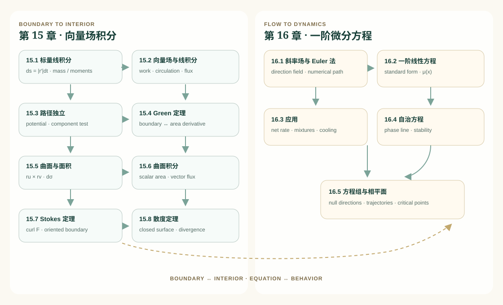

第15章：沿边界累积
曲线和曲面的参数化决定 ds 或 dσ；有向积分还要统一 r′(t) 或 n 的方向。
第 15 章把定积分推广到曲线与曲面，并用 Green、Stokes 和 Divergence 定理连接边界积分与内部导数；第 16 章从斜率场与 Euler 法进入一阶微分方程，研究线性模型、自治方程稳定性和相平面。
00 · Batch Brief
曲线和曲面的参数化决定 ds 或 dσ；有向积分还要统一 r′(t) 或 n 的方向。
一阶方程既可用积分因子求解，也可从斜率场、Euler 法或相线读取定性行为。
公式长、方向符号多、定理条件容易遗漏。打印稿将逐页检查公式、例题锚点、练习解析和分页。
01 · Dependency Map

曲线积分先区分弧长型与向量型；保守场把端点决定积分值推广为 Fundamental Theorem；Green、Stokes、Divergence 则分别连接平面边界与旋度、空间边界与旋度、闭曲面与散度。
解析公式、斜率场、Euler 数值逼近、自治方程符号分析和相平面从不同角度研究同一微分方程。选择方法前先识别阶数、线性性和是否自治。
02 · English Terminology
| English | 中文 | 简明定义 | 节 | 关键公式 / 记号 |
|---|
New Chapter Summary
沿曲线和曲面积分，用定向边界连接旋度、散度和内部累加；核心是参数化、方向、元素和定理条件同时一致。
标量线积分把函数值沿曲线的弧长累积。参数化 r(t) 后，把 ds 换成 |r′(t)|dt；质量、质心、转动惯量和曲面面积都可用同一元素结构表达。
曲线光滑或分段光滑，参数化覆盖指定方向的对象。
这是对弧长积分；与向量场的点积积分不同。
向量场给空间每一点分配向量。F·dr 累积切向分量并给出 work/flow；平面闭曲线上的切向积分为 circulation，法向积分为 outward flux。
反向遍历曲线会改变符号。
T=r'/|r'| 是沿曲线方向的单位切向量。
闭曲线方向决定 circulation 的正负。
n 必须与曲线方向使用一致的取向约定。
保守场是某个标量函数的梯度。线积分只依赖端点；在合适区域内，可用偏导相等的分量检验寻找势函数。
F=∇f 且曲线从 A 到 B 时适用于任意分段光滑路径。
在适当定义域上连续；二维情形还要检查区域无“洞”。
Green 定理把正方向简单闭曲线上的线积分转换为区域内部的二重积分；circulation 形式用二维 curl，flux 形式用二维 divergence。
C 取正方向，R 在左侧；P、Q 与偏导连续。
闭曲线的单位外法向 n 与正方向配套。
曲线必须简单闭合并取正方向。
参数曲面用 ru×rv 描述局部平行四边形，曲面面积元素为 |ru×rv|du dv；图像曲面的面积元素为 √(1+fx²+fy²)dxdy。
参数区域 R 的像构成曲面 S。
正则光滑参数化要求在内部 r_u×r_v≠0。
曲面由 z=f(x,y) 给出并位于投影区域上方。
标量曲面积分累积函数值乘以面积；向量曲面积分累积法向分量并称为 flux。有限曲面可定向，翻转法向会改变 flux 的符号。
标量面积分不依赖曲面定向。
参数叉积的方向必须与选择的面法向一致。
Stokes 定理把定向曲面上的 curl 通量转换为边界曲线上的 circulation。曲面法向与边界方向必须满足右手定则。
F=(P,Q,R) 的分量有连续偏导。
S 的边界 C 的方向与 n 按右手定则相容。
Divergence 定理把闭曲面 outward flux 转换为固体内 divergence 的体积分。它与 Green、Stokes 和 Fundamental Theorem 共同体现“内部导数积分等于边界积分”。
divergence 是标量场，描述局部净流出密度。
S 是闭曲面并取外法向；F 的分量有连续偏导。
| 教材例题/定理 | 结论 | 位置 |
|---|---|---|
| 15.1 例题组 | 参数化后计算 ds；质量、矩和线材惯性使用同一弧长元素。 | 教材p.922-928 / PDFp.923-929 |
| 15.2 例题组 | 同一曲线可计算标量积分、work、circulation 与 flux，方向约定不同。 | 教材p.929-942 / PDFp.930-943 |
| 15.3 例题组 | 保守场由势函数差值计算线积分；组件测试需先满足区域条件。 | 教材p.942-953 / PDFp.943-954 |
| 15.4 例题组 | Green 定理两种形式分别把边界 circulation/flux 转为内部 curl/divergence。 | 教材p.953-964 / PDFp.954-965 |
| 15.5-15.6 例题组 | 曲面面积与曲面积分都从 ru×rv 或图像面积元素建立。 | 教材p.965-984 / PDFp.966-985 |
| 15.7-15.8 例题组 | Stokes 与 Divergence 定理均要求方向条件和可微条件。 | 教材p.985-1009 / PDFp.986-1010 |
标量线积分用 |r′|dt；向量线积分用 F·r′dt。
曲线方向反转会改变向量线积分符号。
保守性分量测试还要检查区域是否 simply connected。
正方向区域的边界时区域在左侧，通常为逆时针外边界。
面积元素必须是 |ru×rv|，不能只写 du dv。
先统一右手定则，再计算任一侧积分。
New Chapter Summary
用解析、数值和几何方法研究 y′=f(x,y)；从斜率场与 Euler 法进入线性方程，再用自治方程和相平面读取长期行为。
一阶微分方程的解是其导数满足方程的函数。斜率场把每点方向可视化；Euler 法沿当前斜率用有限步近似积分曲线。
步长 h 固定时，每一步沿当前斜率前进。
标准形 y′+P(x)y=Q(x) 可乘积分因子 μ，把左边合并为 (μy)′。解公式中的积分常数由初始条件固定。
P、Q 在讨论区间连续；积分常数只保留一个。
乘入 μ 后左边合并为单个乘积导数。
应用题的难点在于先写清“净变化率=输入率−输出率”。冷却、混合、有限制增长和阻力模型常化为线性或可分离方程。
自治方程 y′=f(y) 不含自变量。平衡点由 f(y)=0 确定；相线根据 f 的符号判断上升/下降，并根据穿过方向判断稳定性。
M 是承载容量；k 决定相对增长率。
在平衡点之间只需判断 f(y) 的符号。
一阶系统 X′=F(X) 的解在相平面中形成轨迹。线性系统的特征值决定临界点类型；非线性系统还要结合零增长线和局部线性化。
特征值决定轨迹在临界点附近的几何形态。
| 教材例题/定理 | 结论 | 位置 |
|---|---|---|
| 16.1 例题组 | 验证解、读取斜率场方向，并用 Euler 法递推。 | 教材p.1016-1024 / PDFp.1017-1025 |
| 16.2 例题组 | 积分因子把线性方程化为可直接积分的乘积导数。 | 教材p.1024-1029 / PDFp.1025-1030 |
| 16.3 例题组 | 应用模型先写净变化率，再通过平衡值和初值解释。 | 教材p.1030-1035 / PDFp.1031-1036 |
| 16.4 例题组 | 相线符号和穿过方向决定平衡点稳定类型。 | 教材p.1036-1042 / PDFp.1037-1043 |
| 16.5 例题组 | 平面系统用零增长线、平衡点和特征值分析长期行为。 | 教材p.1043-1048 / PDFp.1044-1049 |
通解必须保留任意常数，并说明适用区间。
每步先用当前 y 求斜率，再更新 y。
必须化成 y′+P(x)y=Q(x) 后识别 P。
μ=e^{∫P dx}；代回检查 (μy)′。
混合问题要用输入率减输出率。
稳定性必须看相邻区间的 f(y) 符号。
05 · Deliberate Practice
题目覆盖概念辨析、计算、证明/说明、应用和综合；先独立作答，再展开提示、关键步骤与完整解析。
06 · Recall & Diagnosis
| 练习编号 / 知识点 | 错误类型 | 应回看的内容 |
|---|---|---|
尚未编辑
07 · PDF Quality Gate
| 检查项 | 结果 | 证据 / 说明 | 缺陷等级 |
|---|---|---|---|
| G1 版本与来源 | 已通过 | 第15章教材页922-1015、第16章1016-1052与PDF物理页逐节核对 | 无 |
| G2 章节覆盖 | 已通过 | 15.1-15.8、16.1-16.5 完整 | 无 |
| G3 术语 | 已通过 | 95 个术语，按章节检索 | 无 |
| G4 定理与公式 | 已通过 | 26 个页面公式，条件随公式展示 | 无 |
| G5 例题结论 | 已通过 | 代表例题与定理均附教材页和 PDF 页锚点 | 无 |
| G6 练习与答案 | 已通过 | 30 道原创题，五种题型、三级答案 | 无 |
| G7 数学渲染 | 已通过 | 本地 KaTeX；公式裁切在桌面、移动端和打印态分别检查 | 无 |
| G8 图表与链接 | 已通过 | B8 知识图、节导航、术语与练习检索可用 | 无 |
| G9 网页与打印 | 已通过 | 桌面、390px 移动端和 A4 PDF 独立检查 | 无 |
| G10 版权与版本 | 已通过 | 原创概要、术语整理、知识图和自编练习；不复制教材正文 | 无 |
08 · Source Ledger
| 节 | 教材页 | PDF物理页 | 内部标题 |
|---|---|---|---|
| 15.1 | 922-928 | 923-929 | 标量线积分 |
| 15.2 | 929-942 | 930-943 | 向量场与线积分 |
| 15.3 | 942-953 | 943-954 | 路径独立与保守场 |
| 15.4 | 953-964 | 954-965 | Green 定理 |
| 15.5 | 965-974 | 966-975 | 曲面与面积 |
| 15.6 | 975-984 | 976-985 | 曲面积分 |
| 15.7 | 985-997 | 986-998 | Stokes 定理 |
| 15.8 | 998-1009 | 999-1010 | 散度定理与统一理论 |
| 16.1 | 1016-1024 | 1017-1025 | 斜率场与 Euler 法 |
| 16.2 | 1024-1029 | 1025-1030 | 一阶线性方程 |
| 16.3 | 1030-1035 | 1031-1036 | 变化率应用 |
| 16.4 | 1036-1042 | 1037-1043 | 自治方程图解法 |
| 16.5 | 1043-1048 | 1044-1049 | 方程组与相平面 |